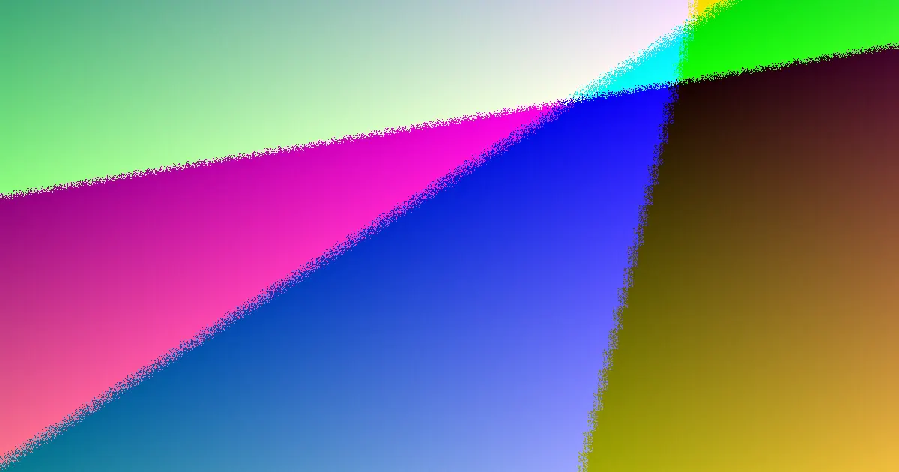

Most retaining walls perth questions come down to four things: an indicative installed price of roughly $250 to $600 per square metre of wall face, a Western Australian building-permit trigger once a wall holds back more than half a metre of ground, a material shortlist led by locally quarried limestone, and a quote scope that may leave out GST, excavation, drainage and hard access. Once those four are understood, the remaining decisions follow the site itself.
For local buyers, retaining walls perth faq drawn from the published Perth guidance on materials, approvals and pricing.
Retaining Walls Perth Faq Explained
Homeowners usually arrive with the same three questions: what will it cost, do I need approval, and where does the water go. The published Perth guidance gives working answers to each. On price, the indicative figure sits around $250 to $600 per square metre of wall face installed, and the guide is explicit that GST, excavation, drainage and difficult access are not in that number. On approvals, the cited Western Australian position is that a building permit is generally needed once a wall holds back more than 0.5 m of ground, though a lower wall can still need one where it joins other building work, touches a boundary, or affects adjoining land. On drainage, the consistent advice is to plan the water path before the wall, not after.
- Cost: treat the square-metre range as a starting band, not a binding offer.
- Approval: height is only one trigger; boundary position and impact on neighbouring land matter too.
- Drainage: a wall that blocks a natural runoff path needs a designed subsoil or aggregate solution.
Does a low garden wall still need paperwork
Often no, but not always. The half-metre trigger covers the common case, yet the guidance names several situations where paperwork can apply at any height. A wall that forms part of boundary fencing, one that supports or protects a neighbour's land, or one bundled with other construction on the property can each attract a permit even when the retained face looks modest. Where formal design is needed, the guide points to AS 4678 for earth retaining structures and to the BA3 Certificate of Design Compliance pathway. The practical habit is simple: check with the local government before assuming an exemption, and ask any contractor which approval path they expect for your wall before pricing is locked in.
For anyone wanting the deeper treatment of warning signs and approval detail, the full guide works through the red flags side of the same decisions.
Which material suits which block
The guidance positions material as a match to the job, not a style choice. Locally quarried limestone is described as the material most Perth walls are built from, because sandy ground on the coastal plain suits block construction. Post-and-panel concrete systems suit taller or longer runs where repeatable, engineered construction matters. Timber sleeper walls fit low garden terracing where loads are modest. Besser block, rock and boulder walls remain in the mix, with suitability governed by retained height, budget, access and whether engineering is involved. None of these is a default; the system has to suit the load, the ground beneath it and the drainage path behind it.
- Sandy coastal sites: limestone blockwork is the natural starting point.
- Taller or longer walls: post-and-panel concrete earns its place.
- Low terraces: timber sleeper is the budget-friendly option.
Why identical quotes rarely arrive identical
Two quotes for the same wall can differ by thousands because each contractor priced a different scope. The published guidance says the indicative range leaves out excavation, cartage, site preparation, drainage, GST and hard access. So the cheapest per-square-metre figure may describe only the visible face. To compare fairly, ask every contractor to price the same retained height, the same material system, the same drainage assumption and the same approval allowance, then look at the line items: wall construction separate from earthworks, drainage marked as priced, excluded or provisional, and engineering or permit documentation stated as included or not. Finish by asking what site finding would trigger a revised price.
If a quote looks thin, the full guide on Perth retaining wall red flags lists the gaps worth probing before signing anything.
Who this FAQ helps most
These answers suit Perth homeowners at the early stage of a wall project: a building pad on sandy ground, a sloping block near the Darling Scarp foothills, a garden terrace, a boundary situation or a replacement wall. They are most useful while material, drainage and approval decisions are still open. They are less useful where a finished design already carries engineering documentation and council direction; then the task narrows to finding a builder who can construct to the approved design and state exclusions plainly. On the sand plain, footing behaviour in sand and drainage behind the wall drive the brief; in the foothills, steeper grades, shallow soil over rock and winter runoff push toward earlier engineering input.
- Record the site details. Note the suburb, approximate retained height, slope, access limits and whether a fence, building pad or neighbouring land is involved.
- Shortlist two or three systems. Test limestone, post-and-panel concrete, besser block, timber sleeper, rock or boulder options against height, budget and ground conditions, and drop any the site rules out.
- Check the approval position. Ask whether retained height, boundary position or impact on adjoining land points to a permit or design documentation, and confirm with the local government.
- Compare itemised quotes. Make sure each quote treats excavation, drainage, GST, difficult access, engineering and permit costs consistently before weighing up price.
| Your situation | What matters most | Question worth asking |
|---|---|---|
| Level building pad on sand | Footing performance and drainage | How will water move behind the wall after rain? |
| Steep foothill block | Engineering input and ground conditions | Is a designed solution needed for this slope? |
| Low garden terrace | Budget and appearance | Which low-height system suits the look and the load? |
| Boundary or fence line | Neighbour impact and approval | Could this wall affect adjoining land or need a permit? |
Common questions
What is the indicative installed cost of a retaining wall in Perth? The published guidance places the indicative installed range at roughly $250 to $600 per square metre of wall face. It stresses that this figure excludes GST, excavation, drainage and difficult access, so the lowest square-metre rate is not automatically the lowest total project cost. The safest comparison asks each contractor to price the identical scope.
When does a retaining wall in WA need a building permit? The cited position is that a permit is generally required once a wall retains more than 0.5 m of ground. However, walls below that height can still need approval where they connect to other building work, affect or protect adjoining land, or form part of a boundary wall or substantial dividing fence. Design work may reference AS 4678 and the BA3 Certificate of Design Compliance process. Confirming with the relevant local government is the reliable step before assuming no approval applies.
Which wall material is most common in Perth? The guidance describes limestone, quarried locally, as the material most Perth walls are built from, particularly where sandy ground suits blockwork. Post-and-panel concrete is positioned for taller or longer runs, timber sleeper for low garden terracing, and besser block, rock and boulder walls remain options depending on load, soil, drainage, budget and approval needs.
Independent information guide for Perth homeowners researching retaining wall costs, materials, approvals and quotes; not a substitute for site-specific engineering or local government advice.